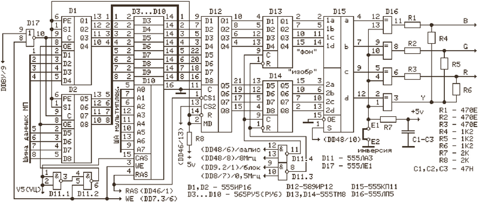
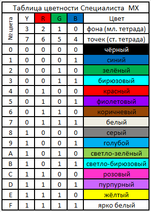

www.spetsialist-mx.ru
САЙТ О ПК "СПЕЦИАЛИСТ" И ЕГО КЛОНАХ
| |
|
| ГЛАВНАЯ | |
| МИКРОПРОЦЕССОР | |
| КОНТРОЛЛЕР НГМД | |
| ПАМЯТЬ | |
| ИНТЕРФЕЙСЫ | |
| КОНТРОЛЛЕР ЦВЕТА | |
| ПРОГРАММЫ | |
| ИГРЫ | |
| СПЕЦИАЛИСТ МХ2 | |
| ПЛИС | |
| ССЫЛКИ | |
| ОБРАТНАЯ СВЯЗЬ |
КОНТРОЛЛЕР ЦВЕТА ДЛЯ ПК "СПЕЦИАЛИСТ МХ"
В состав компьютера был введён контроллер цвета, допускающий 16 цветов на точку при разрешении 384 х 256 точек и имеющий своё собственное ОЗУ. Появилась возможность создавать "цветные" программы.
Основным отличием данной версии от предыдущих является наличие собственного порта цвета, реализованного на регистрах D1, D2. Это существенно облегчило программную поддержку контроллера цвета. Код цвета записанный в контроллер постоянно хранится в нём. При записи информации в экранную область памяти, код цвета из регистров порта параллельно записываются в ОЗУ цвета на элементах D3...D10. При отображении информации на экране монитора, одновременно с извлечением из видео ОЗУ байта посылки (8 горизонтальных точек), из ОЗУ цвета извлекается код цвета и фиксируется в регистре D12. Далее, при выводе битов полок видеоизображения на экран, код цвета записывается в регистры D13, D14. Смена полки видео битов и смена кода цвета согласованы во времени и осуществляется одновременно сигналами управления, подаваемыми на входы элементов D11.3 и D11.4. Ими же реализуется и режим гашения видеосигнала за кадром. Видеоимпульсами, подаваемыми на вход "S" мультиплексора D15, осуществляется выбор цвета фона (младший полубайт кода цвета) или цвета изображения (старший полубайт кода цвета). С выходов D15 код цвета через буферные элементы D16 подаётся на резисторную матрицу R1...R6. Три бита цвета RGB в совокупности позволяют получить только 8 цветов. Для расширения вариантов цветов до 16 используется бит яркости Y. Резисторная матрица R1...R6 обеспечивает подмешивание бита яркости к комбинации цветов RGB, обеспечивая тем самым получения 16 цветовых комбинаций. Буферные элементы D16 также позволяют сменить логики видеосигналов RGB с положительной на отрицательную (инверсную). Осуществляется это перемычкой Е1 - Е2. При замкнутой перемычке - положительная логика видеосигнала, когда гашение за кадром определяется нулевым логическим уровнем элементов D16, а яркость - единичным логическим уровнем. Смена логики видеосигналов RGB необходима для согласования контроллера с разными типами телевизоров или мониторов.
В схеме контроллера предусмотрено применение ИМС памяти К565РУ5 и К565РУ6. Обусловлено это дефицитностью (в то время) ИМС К565РУ6. К тому же управление ИМС К565РУ5 в данном случае проще, так как выборка ОЗУ цвета осуществляется тем же сигналом V5 что и основное ОЗУ ПК.
Выход контроллера рассчитан на входное сопротивление входов RGB и синхронизации видеомонитора порядка единиц (1,5 … 2 кОм). В ряде мониторов входное сопротивление этих входов составляет 75 Ом. В этом случае сигналы RGB и синхронизации необходимо подавать через эммитерные повторители, что не совсем удобно и эффективно. Поэтому рекомендуем в таких мониторах резисторы на входах, определяющие входное сопротивление, заменить на более высокоомные - 15 … 20 кОм.
Контроллер наладки не требует при исправных элементах. ИМС памяти рекомендуем предварительно оттестировать. Визуально видеть качество работы всего ОЗУ цвета позволяет Test_MX (ПЗУшный). Регулирование цветовых градаций следует осуществлять регуляторами монитора (телевизора). При настройке цветовых градаций рекомендуем пользоваться программой Test_col из архива soft_mx_i80.rar.

Ниже представлена таблица цветности ПК "Специалист МХ", применяемая в контроллере цвета.
